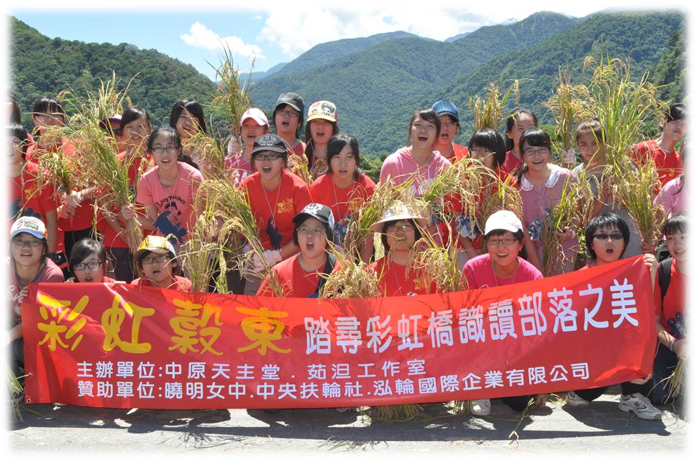

踏尋彩虹橋的女孩
踏尋彩虹橋 編織生命圖像
踏尋，賽德克，彩虹橋下的勇氣與堅強。 一份溫暖，來自彩虹穀東。 一份關懷，來自彩虹禮物。 期待，部落孩子一份誠摯天真的笑容。
-

計畫緣起
曉明女中在2012年聖誕節舉辦「送禮物到部落」，師生53人到中原清流部落過節，為部落互助國小全校98位學生準備聖誕禮物，並為部落長輩（茹泹Ru dan）送禮，晚上和部落孩子拿火把報佳音，一同參與聖誕晚會，驚艷小賽德克的小英雄美女的部落歌舞表演，得知茹泹（Ru dan）工作室集合部落年輕人每週五晚上團練傳承傳統歌舞，這些孩子多為弱勢賽德克或泰雅族孩童，於是師生發起為部落孩子募集仁愛助學金、推銷農產品、陪伴部落孩順利求學並承傳部落文化，於是寫計畫打算利用暑假再進部落，本著「認識故鄉是愛故鄉的開始」、「環保就是找回古老的智慧」的想法，一起和部落孩子聽耆老說故事，認識部落文化之美，學習與大自然和好，節能減碳一起珍惜好山好水，給師生一趟部落服務與陪伴學習的機會。
-